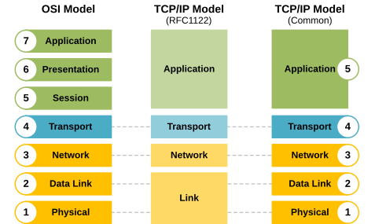

El modelo OSI y el modelo TCP/IP
El modelo OSI es un modelo teórico de referencia que divide la comunicación de redes en 7 capas, permitiendo comprender y estandarizar cómo se transmiten los datos.
Por otro lado, el modelo TCP/IP es un modelo práctico utilizado en Internet que organiza la comunicación en 4 capas.
La principal diferencia es que OSI tiene una estructura más detallada y sirve como guía para entender las redes, mientras que TCP/IP se utiliza directamente para implementar la comunicación entre dispositivos.
OSI está compuesto por 7 capas: física, enlace de datos, red, transporte, sesión, presentación y aplicación. Cada una cumple una función específica, desde la transmisión física de bits hasta la interacción con las aplicaciones.
Por otro lado, TCP/IP tiene 4 capas: acceso a la red, Internet, transporte y aplicación. Estas agrupan varias funciones del modelo OSI. Por ejemplo, la capa de aplicación de TCP/IP reúne las funciones de aplicación, presentación y sesión del modelo OSI.

Las 7 capas del modelo OSI
-
Física
Es la encargada de transmitir los bits por medios físicos, como cables, fibra óptica o señales inalámbricas.
-
Enlace de datos
Envía los datos entre dispositivos que están conectados a la misma red. Trabaja con direcciones MAC.
-
Red
Busca la ruta que deben seguir los datos para llegar a su destino y utiliza direcciones IP.
-
Transporte
Se encarga de que los datos lleguen correctamente al destino. También los divide en segmentos y controla que lleguen completos.
-
Sesión
Inicializa, mantiene y finaliza la comunicación entre dispositivos.
-
Presentación
Organiza y transforma los datos para que el dispositivo que los recibe pueda entenderlos.
-
Aplicación
Es la capa con la que interactúan los programas que usamos, como el navegador, el correo o WhatsApp.